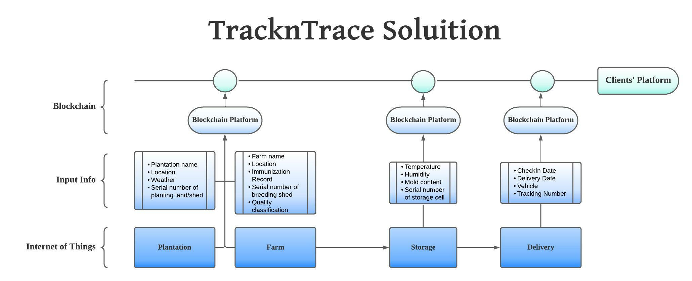
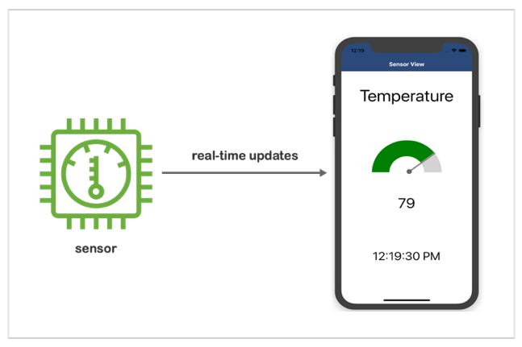

Why We Do
Food traceability is a technical means to ensure food safety. Food safety issues have always
been the focus of the government and society. In recent years, food
safety incidents have emerged one after another, causing social anxiety.
It is
particularly
urgent to improve supervision and speed up the construction of a food safety traceability
system. An objective database built with blockchain technology can ensure the credibility of
information and build trust throughout the production line.

What We Do
FoodSteps provides food
traceability with implementations of the internet of things. With blockchain technology,
information is added while passing through each node of the production line and cannot be edited
after input. Before goods arrive at the shelf, we screen them based on these data and make sure
the quality of the goods.
Our clients will have detailed information about the whole
production
line. Once an investigation is needed for infection or contamination, all information can be
pulled out for clients to track.

How We Do
Before goods move
to the next step of the production line, our quality inspectors will input information about the
status of the goods into our database with the blockchain app. Once information is input, only
managers with certain codes will be able to delete it, and there will be a record of delete.
They need to file a fact sheet about this action for investigation purposes.
After goods
are
delivered to our clients, a serial number will direct them to this website. In here, they can
see all
information that has been input.

In the Future
Goods will be carried in cargo boxes with sensors that keep track of temperature, humidity, mold
risk and automatically send data into blockchain when passed receptive doors when it leaves each
step of the supply chain.
Once implemented, the process of inputting information will be
fast
and objective. Information is inputted block by block and cannot be altered. All consumers will
be able to get access to the set of data of their goods.
